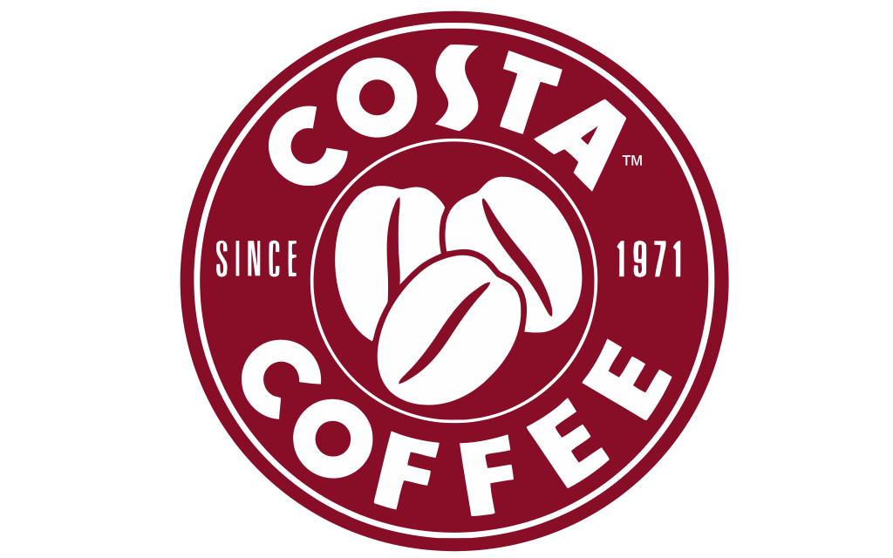
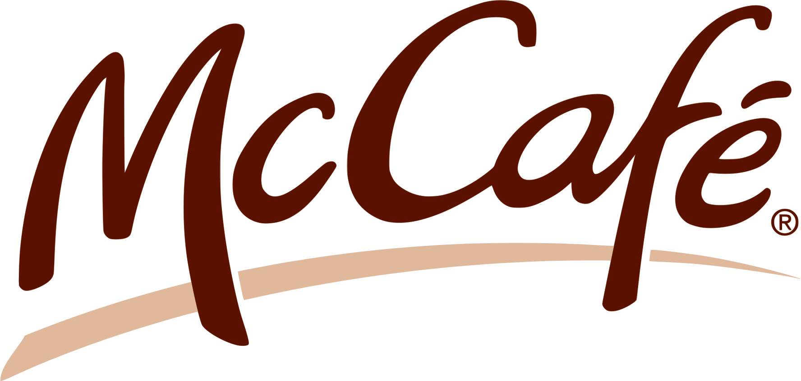

Coffee Lovers has been providing solutions to all of your refreshment needs since 1960. We’ll invigorate
and energize your break room with quality equipment and products—the key to a healthy and happy
workforce!
TYPES OF COFFEE BEANS
1- ROBUSTA
Robusta beans have a bitter and grainy flavor with an undertone of the peanuts. The
caffeine level in robusta is twice as compared to Arabica beans. Robusta has a higher yield and accounts for
25% of the world’s demand.
2- ARABICA
As the name suggests, Arabica is the gift from the Yemen country of the Arabian peninsula.
The oval-shaped and aromatic beans have a blend of sweet and bitter flavor. Its caffeine level is relatively
low too
3- LIBERICA
These coffee beans have a smoky and nutty flavor with a lingering note of the dark
chocolate. Liberica is one of the highest costing beans in the world, thanks to its rare cultivation. It is
not as popular as the other two in India.
4- SELECTION 9
Selection 9 is developed from the breeding of Tafarikela and Hybrido-de-Timor. This
rust-resistant variety topped the Cupping Competition of 2002 and won the Fine Cup Award for the best
Arabica flavor of India.
TOP 5 COFFEE BRANDS

STARBUCKS
Founded in 1971 at Seattle, Washington
Everyone knows about Starbucks, thanks to their aggressive marketing and shrewd advertising techniques. But,
does everyone like Starbucks coffee? The answer differs.
The brand is not known for sourcing and roasting the best coffee beans. Most of their coffee beans are dark
roasted, meaning, they taste bitter. .
Founded in 1950 at Canton, Massachusetts
Dunkin' is not as big
a brand as Starbucks but they are second in line in the number of
stores. But
yes, the coffee Dunkin' offers is surely somewhat superior
to Starbucks. For instance, Dunkin' does not
have the
signature
burnt taste in coffee as Starbucks does. .
DUNKIN DONUTS

COSTA COFFEE
Founded in 1971 at London, United KingdomCosta coffee is one of the largest coffee chains in
Britain. Having its presence in more than 31 countries worldwide, it has more than 3000 outlets serving coffee
with around 18 thousand branches in the whole world.Costa coffees are medium roasted, which makes them smoother,
sweeter, and nuttier.
Founded in 1993 at Melbourne, AustraliaOwned by McDonald's, McCafe is one of the leading
coffee chains in countries like Australia and New Zealand. McCafé enjoys the benefit of having a vast presence
(Because let's face it, McDonald's is everywhere!) As McDonald's expands worldwide, there is a decent chance of
McCafé doing the same.

McCafé
Founded in 1938 at Switzerland If there is another coffee everyone has heard of, it is
Nescafe. It's present almost anywhere in the globe. The instant coffee by Nescafe is unbeatable, not so much by
taste as it is for availability. As for the taste, it sure is not the best instant coffee.
NESCAFE